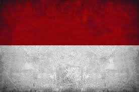
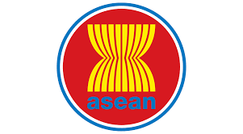
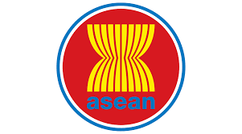

 

Tanpa kelaparan merupakan salah satu tujuan SDGs yang harus bangat dilakukan. Sebagai manusia, kami diberi hati nurani untuk merasakan kasihan jika melihat manusia lain kesusahan. Kelaparan merupakan salah satu isu global yang sering dialami. Jadi, apa yang akan terjadi jika tujuan SDGs ini berhasil dan dapat mengatasi kelaparan dalam dunia ini? Yang akan terjadi adalah negara negara yang mengalami isu kelaparan tersebut, akan terpenuhi kebutuhan pangan dan tidak ada yang kelaparan karena kekurangan nutrisi atau kekurangan makan. Kelaparan dapat menyebabkan beberapa hal seperti berikut:
Kerja sama bentuk bilateral merupakan kerja sama dimana 2 negara internasional, dimana kedua negara tersebut berbeda benua bekerja sama auntuk malakukan suatu proyek bersama ataupun dalam bidang lainnya. Contoh kerja sama bilateral sebagai berikut:
Kerja sama multilateral merupakan kerja sama yang menggabungkan beberapa negara dari beda benua (internasional). Contoh dari kerja sama multilateral sebegai berikut:
Kerja sama regional adalah bentuk kerja sama dimana beberapa negara di satu benua bekerja sama untuk mencapai tujuan tertentu. Contoh kerja sama regional:
SDGs dan kerja sama dapat mempengaruhi satu sama lain dengan cara saling mendukung dan memperkuat agar tujuan bersama tercapai dan dapat berlanjut terus sampai masa depan. SDGs bertujuan sebagai panduan kerja sama, memberikan tujuan yang lebih jelas dan kerja sama dapat membuat SDGs tercapai. Selain itu, SDGs dengan kerja sama dapat menambah sumber daya alam ataupun sumber daya manusia, negara maju dapat membantu negara berkembang.Mekanisme yang menghubungkan SDGs dengan kerja sama salahs atunya adalah kerja sama internasional dalam forum, platform utama dari ini merupakan PBB, HLPF, dan Konferensi dan KTT Global.
SDGs dengan kerja sama memiliki hubungan yang saling melengkapi, tanpa SDGs, kerja sama tidak memiliki tujuan yang jelas, dan tanpa kerja sama, tujuan SDGs tidak dapat tercapai. Maka dari itu, pentingnya dengan adanya SDGs dan kerja sama, tanpa salah satu, tujuan tidak tercapai ataupun kehilangan tujuan dan mungkin saja, negara negara tidak akan adanya kerja sama dan tidak dapat saling melengkapi. Tujuan tujuan SDGs memiliki tujuan agar negara yang berkondisi baik membantu negara yang memperlukan bantuan dan sedang melalui isu isu.
Sebagai pelajar, setiap manusia harus diajarkan sejak usia muda tentang kerja sama dan bagaimana cara agar dapat bekerja sama dengan baik. Kerja sama dan SDGs sangatlah berpengaruh dalam negara kita, yang akhirnya mempengaruhi rakyatnya sendiri, maka dari itu, sebagai rakyat, kami harus selalu mendukung kerja sama yang akan berhasil baik bagi negara kita ataupun membantu negara lain yang sedang berkembang maupun kesusahan.
ss
ss
sss
sss